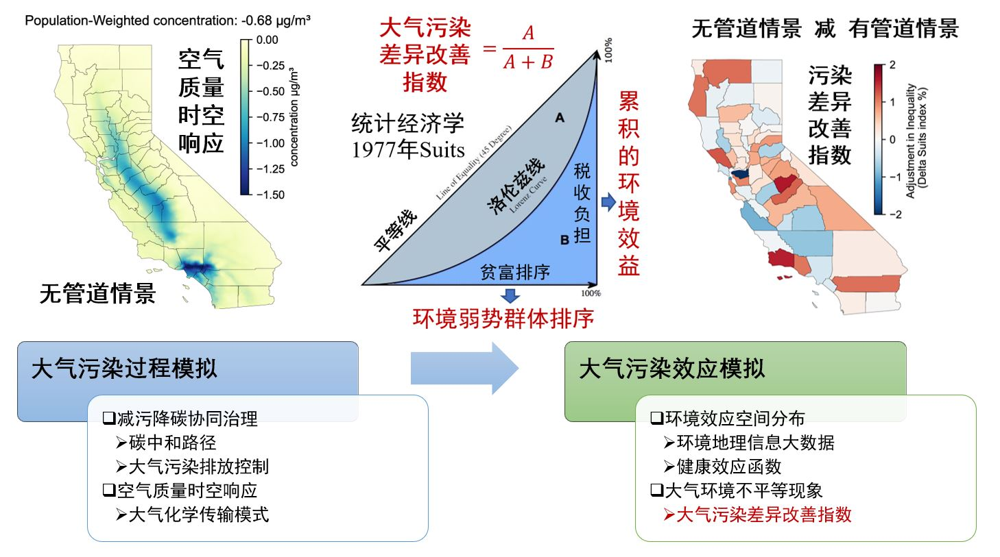
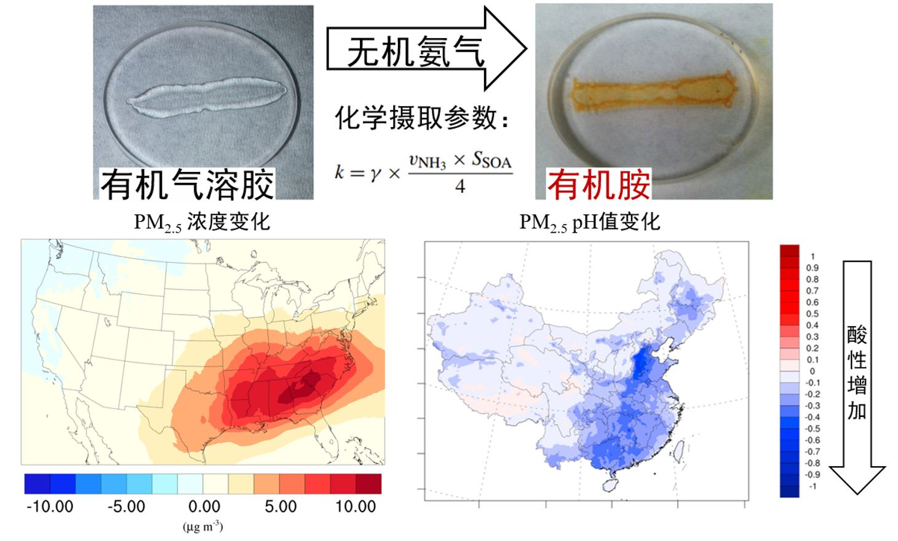
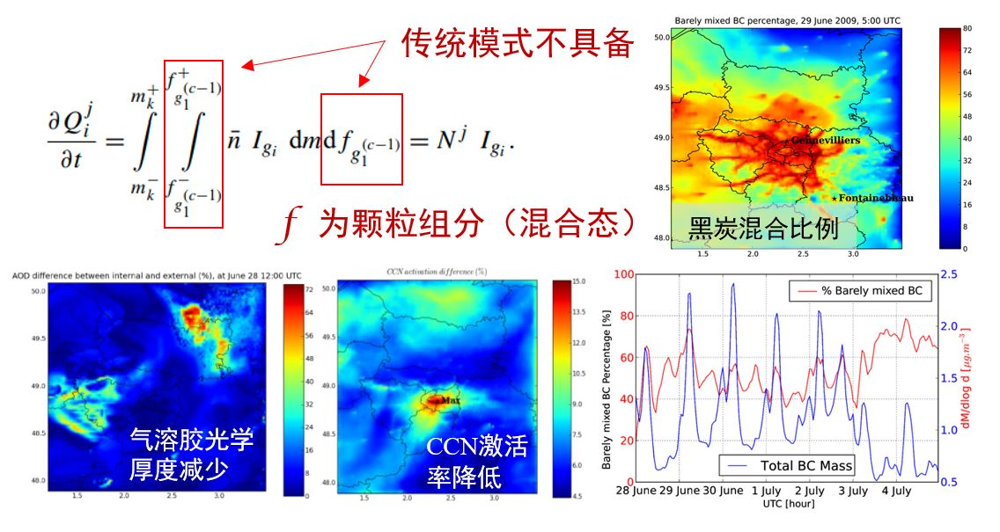

主要研究方向与成果
1. 减污降碳协同治理评估
模拟不同碳中和路径下，各个排放源的时空特征与减排幅度，计算相关大气污染过程的时空响应，并耦合经济收入、人口结构及基准死亡率等地理信息大数据，及多种污染物健康效应函数，评估对应的环境效应收益。创造性的结合社会经济学中的洛伦兹曲线方法，设计了大气污染差异改善指数，量化了大气污染效应空间差异的计算，为比较各个污染控制路径改善大气环境不平等现象的潜力提供了评价基础。揭示了不同减污降碳政策对公共健康影响的时空特征及相关政策对大气环境不平等现象的改善潜力。

2. SOA对氨气的摄取机制
基于公开的气雾箱观测数据，拟合SOA对氨气的摄取系数，基于SOA统合等效界面一阶摄取假设，创建了气溶胶无机源有机胺的化学摄取参数化方法。并将该化学机制导入大气环境模拟平台CMAQ中，弥补了传统模式中相关参数化过程的缺失。该化学机制的加入显著提高了与植被相关的SOA生成速率，改善了传统模式中对SOA的低估，并揭示了相关过程中的化学反馈机制，发现了相关机制对颗粒物酸碱性的影响，并且显著改善了模式对PM2.5中硝酸盐的高估。

3. 大气气溶胶混合过程模拟
理论论证了粒径-组分双自由度物理架构下，气溶胶化学老化过程中维持其质量与数量守恒的数学模型，并发展了该架构下新粒子生成过程的参数化方法。相关工作进一步完善了该物理架构，使气溶胶生成及老化过程中混合态的全过程解析成为现实。 该模式推进了气溶胶混合态的大范围高精度解析，论证了气溶胶混合态的时空分布特征，并阐明了气溶胶混合态对气溶胶粒径分布，吸湿性，云凝结核效率，光学特征等性质的影响。 同时结合外场观测验证了模型的可靠性，阐明了气溶胶混合态假设对铵盐和硝酸盐生成机制的影响，并揭示了静稳态大气条件对气溶胶混合的促进作用。
